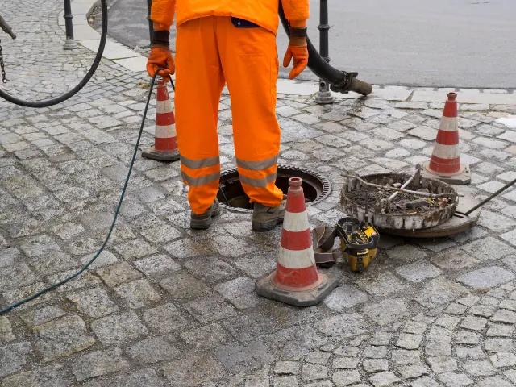

Partnerbijdrage
Wanneer het riool z’n eigen leven gaat leiden
Gepubliceerd op 24 april 2025

Het begint vaak klein. Een wasbak die nét iets langzamer leegloopt. Een borrelend geluid uit het doucheputje. Een geur waarvan je eerst denkt: “dat verbeeld ik me vast.” Maar voor je het weet, is het duidelijk dat er iets niet helemaal lekker zit onder je huis. Wie zoekt op Riool ontstoppen Nijmegen komt al snel terecht bij uitleg en diensten die helpen om weer lucht te krijgen. Letterlijk en figuurlijk.
Van ongemak naar echte verstopping
In een stad als Nijmegen, met veel vooroorlogse huizen en karakteristieke straatjes, ligt er een complex rioolstelsel onder onze voeten. Oude leidingen, wortelgroei of gewoon jaren van opgestapelde resten kunnen ervoor zorgen dat water steeds minder makkelijk z’n weg naar buiten vindt. En dan verandert een klein ongemak al snel in een echte verstopping.
Wat het lastig maakt: een verstopt riool zit vaak dieper dan je denkt. Waar je bij een verstopte gootsteen nog met een plopper of soda aan de slag kunt, zijn rioolproblemen meestal niet met huis-tuin-en-keukenoplossingen op te lossen. Ze zitten dieper in het systeem, vragen om inzicht én professioneel gereedschap.
De rol van weer, bodem en ouderdom
In een regio als Nijmegen speelt ook de ondergrond een rol. De stad ligt op een overgang van rivierklei naar zandgrond, en dat betekent dat verzakkingen of verschuivingen van leidingen vaker voorkomen dan op andere plekken. Een stevige regenbui kan dan net het zetje geven waardoor een oude leiding het begeeft.
Ook wortelgroei is een bekende boosdoener. Bomen langs de weg of in tuinen groeien gestaag door, en hun wortels zijn sterk genoeg om haarscheurtjes in leidingen op te sporen. En vervolgens groter te maken. Binnen de kortste keren groeit er letterlijk een probleem in je riolering.
Wat kun je zelf doen?
Hoewel je niet elk rioolprobleem kunt voorkomen, zijn er dingen die helpen. Spoel geen vet of etensresten door de gootsteen, houd haren uit het doucheputje en wees voorzichtig met vochtige doekjes en andere niet-afbreekbare producten in het toilet. Toch blijft het zo dat sommige verstoppingen simpelweg ontstaan door ouderdom of onzichtbare schade.
Als je twijfelt, loont het om even een expert te raadplegen. Je hoeft dan niet meteen in paniek te raken of zelf te gaan graven. Een partij als Riocare kijkt met een camera in het riool, lokaliseert het probleem en pakt het gericht aan. Soms is het simpelweg schoonmaken met hoge druk, soms moet er een deel vervangen worden. In beide gevallen weet je in ieder geval wát er speelt.

De timing is alles
Wie wel eens een verstopt riool heeft meegemaakt, weet dat het nooit op een handig moment gebeurt. Net voor het weekend, met visite op de stoep, of op een zondagochtend als alles dicht is. En dan is het fijn als je weet waar je terechtkunt.
Daarnaast is het slim om problemen niet te lang uit te stellen. Hoe eerder je erbij bent, hoe kleiner de kans op schade of dure reparaties. En laten we eerlijk zijn: niemand zit te wachten op rioolwater dat via de kelder omhoogkomt. Dus beter één keer te veel gekeken, dan één keer te laat.
Nijmegen blijft in beweging, ook onder de grond
Met alle vernieuwingen in de stad, van nieuwe wijken tot verbouwingen in het centrum, blijft ook het rioolnetwerk in ontwikkeling. Oude systemen worden vervangen, nieuwe aansluitingen gelegd. En dat betekent ook: extra waakzaamheid.
Dus ruik je iets geks, borrelt het meer dan normaal of twijfel je aan de afvoer? Wacht dan niet te lang. Soms begint het met een kleine check, en eindigt het met rust in huis. En dát is uiteindelijk waar iedereen in Nijmegen naar streeft: een fijne, schone en comfortabele woonplek. Oók onder de vloer.